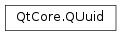

QUuid¶
Synopsis¶
Functions¶
Static functions¶
- def
createUuid() - def
createUuidV3(ns, baseData) - def
createUuidV3(ns, baseData) - def
createUuidV5(ns, baseData) - def
createUuidV5(ns, baseData) - def
fromRfc4122(arg__1)
Detailed Description¶
The
PySide2.QtCore.QUuidclass stores a Universally Unique Identifier (UUID).Using U niversally U nique ID entifiers (UUID) is a standard way to uniquely identify entities in a distributed computing environment. A UUID is a 16-byte (128-bit) number generated by some algorithm that is meant to guarantee that the UUID will be unique in the distributed computing environment where it is used. The acronym GUID is often used instead, G lobally U nique ID entifiers, but it refers to the same thing.
Actually, the GUID is one variant of UUID. Multiple variants are in use. Each UUID contains a bit field that specifies which type (variant) of UUID it is. Call
PySide2.QtCore.QUuid.variant()to discover which type of UUID an instance ofPySide2.QtCore.QUuidcontains. It extracts the three most significant bits of byte 8 of the 16 bytes. InPySide2.QtCore.QUuid, byte 8 isQUuid::data4[0]. If you create instances ofPySide2.QtCore.QUuidusing the constructor that accepts all the numeric values as parameters, use the following table to set the three most significant bits of parameterb1, which becomesQUuid::data4[0]and contains the variant field in its three most significant bits. In the table, ‘x’ means don’t care .
msb0 msb1 msb2 Variant 0 x x NCS (Network Computing System) 1 0 x DCE (Distributed Computing Environment) 1 1 0 Microsoft (GUID) 1 1 1 Reserved for future expansion If
PySide2.QtCore.QUuid.variant()returnsQUuid.DCE, the UUID also contains a version field in the four most significant bits ofQUuid::data3, and you can callPySide2.QtCore.QUuid.version()to discover which version yourPySide2.QtCore.QUuidcontains. If you create instances ofPySide2.QtCore.QUuidusing the constructor that accepts all the numeric values as parameters, use the following table to set the four most significant bits of parameterw2, which becomesQUuid::data3and contains the version field in its four most significant bits.
msb0 msb1 msb2 msb3 Version 0 0 0 1 Time 0 0 1 0 Embedded POSIX 0 0 1 1 Md5(Name) 0 1 0 0 Random 0 1 0 1 Sha1 The field layouts for the DCE versions listed in the table above are specified in the Network Working Group UUID Specification.
Most platforms provide a tool for generating new UUIDs, e.g.
uuidgenandguidgen. You can also usePySide2.QtCore.QUuid.createUuid(). UUIDs generated byPySide2.QtCore.QUuid.createUuid()are of the random type. TheirQUuid.Versionbits are set toQUuid.Random, and theirQUuid.Variantbits are set toQUuid.DCE. The rest of the UUID is composed of random numbers. Theoretically, this means there is a small chance that a UUID generated byPySide2.QtCore.QUuid.createUuid()will not be unique. But it is a very small chance.UUIDs can be constructed from numeric values or from strings, or using the static
PySide2.QtCore.QUuid.createUuid()function. They can be converted to a string withPySide2.QtCore.QUuid.toString(). UUIDs have aPySide2.QtCore.QUuid.variant()and aPySide2.QtCore.QUuid.version(), and null UUIDs return true fromPySide2.QtCore.QUuid.isNull().
-
class
PySide2.QtCore.QUuid¶ -
class
PySide2.QtCore.QUuid(arg__1) -
class
PySide2.QtCore.QUuid(arg__1) -
class
PySide2.QtCore.QUuid(arg__1) -
class
PySide2.QtCore.QUuid(l, w1, w2, b1, b2, b3, b4, b5, b6, b7, b8) Parameters: - b4 –
PySide2.QtCore.uchar - w1 –
PySide2.QtCore.ushort - b2 –
PySide2.QtCore.uchar - w2 –
PySide2.QtCore.ushort - b1 –
PySide2.QtCore.uchar - b8 –
PySide2.QtCore.uchar - b3 –
PySide2.QtCore.uchar - b7 –
PySide2.QtCore.uchar - arg__1 –
PySide2.QtCore.QByteArray - l –
PySide2.QtCore.uint - b5 –
PySide2.QtCore.uchar - b6 –
PySide2.QtCore.uchar
Creates the null UUID.
PySide2.QtCore.QUuid.toString()will output the null UUID as “{00000000-0000-0000-0000-000000000000}”.Creates a
PySide2.QtCore.QUuidobject from thePySide2.QtCore.QByteArraytext, which must be formatted as five hex fields separated by ‘-‘, e.g., “{xxxxxxxx-xxxx-xxxx-xxxx-xxxxxxxxxxxx}” where each ‘x’ is a hex digit. The curly braces shown here are optional, but it is normal to include them. If the conversion fails, a null UUID is created. SeePySide2.QtCore.QUuid.toByteArray()for an explanation of how the five hex fields map to the public data members inPySide2.QtCore.QUuid.See also
PySide2.QtCore.QUuid.toByteArray()PySide2.QtCore.QUuid.QUuid()Creates a
PySide2.QtCore.QUuidobject from the stringtext, which must be formatted as five hex fields separated by ‘-‘, e.g., “{xxxxxxxx-xxxx-xxxx-xxxx-xxxxxxxxxxxx}” where each ‘x’ is a hex digit. The curly braces shown here are optional, but it is normal to include them. If the conversion fails, a null UUID is created. SeePySide2.QtCore.QUuid.toString()for an explanation of how the five hex fields map to the public data members inPySide2.QtCore.QUuid.See also
PySide2.QtCore.QUuid.toString()PySide2.QtCore.QUuid.QUuid()Creates a UUID with the value specified by the parameters,
l,w1,w2,b1,b2,b3,b4,b5,b6,b7,b8.Example:
# {67C8770B-44F1-410A-AB9A-F9B5446F13EE} IID_MyInterface = QUuid(0x67c8770b, 0x44f1, 0x410a, 0xab, 0x9a, 0xf9, 0xb5, 0x44, 0x6f, 0x13, 0xee)
- b4 –
-
PySide2.QtCore.QUuid.Variant¶ This enum defines the values used in the
variant fieldof the UUID. The value in the variant field determines the layout of the 128-bit value.Constant Description QUuid.VarUnknown Variant is unknown QUuid.NCS Reserved for NCS (Network Computing System) backward compatibility QUuid.DCE Distributed Computing Environment, the scheme used by PySide2.QtCore.QUuidQUuid.Microsoft Reserved for Microsoft backward compatibility (GUID) QUuid.Reserved Reserved for future definition
-
PySide2.QtCore.QUuid.Version¶ This enum defines the values used in the
version fieldof the UUID. The version field is meaningful only if the value in thevariant fieldisQUuid.DCE.Constant Description QUuid.VerUnknown Version is unknown QUuid.Time Time-based, by using timestamp, clock sequence, and MAC network card address (if available) for the node sections QUuid.EmbeddedPOSIX DCE Security version, with embedded POSIX UUIDs QUuid.Name Name-based, by using values from a name for all sections QUuid.Md5 Alias for Name QUuid.Random Random-based, by using random numbers for all sections QUuid.Sha1
-
PySide2.QtCore.QUuid.StringFormat¶ This enum is used by
PySide2.QtCore.QUuid.toString()() to control the formatting of the string representation. The possible values are:Constant Description QUuid.WithBraces The default, PySide2.QtCore.QUuid.toString()will return five hex fields, separated by dashes and surrounded by braces. Example: {00000000-0000-0000-0000-000000000000}.QUuid.WithoutBraces Only the five dash-separated fields, without the braces. Example: 00000000-0000-0000-0000-000000000000. QUuid.Id128 Only the hex digits, without braces or dashes. Note that PySide2.QtCore.QUuidcannot parse this back again as input.
Note
This enum was introduced in Qt 5.11.
-
PySide2.QtCore.QUuid.__reduce__()¶ Return type: PyObject
-
PySide2.QtCore.QUuid.__repr__()¶ Return type: PyObject
-
static
PySide2.QtCore.QUuid.createUuid()¶ Return type: PySide2.QtCore.QUuidOn any platform other than Windows, this function returns a new UUID with variant
QUuid.DCEand versionQUuid.Random. On Windows, a GUID is generated using the Windows API and will be of the type that the API decides to create.
-
static
PySide2.QtCore.QUuid.createUuidV3(ns, baseData)¶ Parameters: - ns –
PySide2.QtCore.QUuid - baseData – unicode
Return type: This function returns a new UUID with variant
QUuid.DCEand versionQUuid.Md5.nsis the namespace andbaseDatais the basic data as described by RFC 4122.- ns –
-
static
PySide2.QtCore.QUuid.createUuidV3(ns, baseData) Parameters: - ns –
PySide2.QtCore.QUuid - baseData –
PySide2.QtCore.QByteArray
Return type: This function returns a new UUID with variant
QUuid.DCEand versionQUuid.Md5.nsis the namespace andbaseDatais the basic data as described by RFC 4122.- ns –
-
static
PySide2.QtCore.QUuid.createUuidV5(ns, baseData)¶ Parameters: - ns –
PySide2.QtCore.QUuid - baseData – unicode
Return type: This function returns a new UUID with variant
QUuid.DCEand versionQUuid.Sha1.nsis the namespace andbaseDatais the basic data as described by RFC 4122.- ns –
-
static
PySide2.QtCore.QUuid.createUuidV5(ns, baseData) Parameters: - ns –
PySide2.QtCore.QUuid - baseData –
PySide2.QtCore.QByteArray
Return type: This function returns a new UUID with variant
QUuid.DCEand versionQUuid.Sha1.nsis the namespace andbaseDatais the basic data as described by RFC 4122.- ns –
-
static
PySide2.QtCore.QUuid.fromRfc4122(arg__1)¶ Parameters: arg__1 – PySide2.QtCore.QByteArrayReturn type: PySide2.QtCore.QUuidCreates a
PySide2.QtCore.QUuidobject from the binary representation of the UUID, as specified by RFC 4122 section 4.1.2. SeePySide2.QtCore.QUuid.toRfc4122()for a further explanation of the order ofbytesrequired.The byte array accepted is NOT a human readable format.
If the conversion fails, a null UUID is created.
See also
PySide2.QtCore.QUuid.toRfc4122()PySide2.QtCore.QUuid.QUuid()
-
PySide2.QtCore.QUuid.isNull()¶ Return type: PySide2.QtCore.boolReturns
trueif this is the null UUID {00000000-0000-0000-0000-000000000000}; otherwise returnsfalse.
-
PySide2.QtCore.QUuid.__ne__(orig)¶ Parameters: orig – PySide2.QtCore.QUuidReturn type: PySide2.QtCore.boolReturns
trueif thisPySide2.QtCore.QUuidand theotherPySide2.QtCore.QUuidare different; otherwise returnsfalse.
-
PySide2.QtCore.QUuid.__lt__(other)¶ Parameters: other – PySide2.QtCore.QUuidReturn type: PySide2.QtCore.boolReturns
trueif thisPySide2.QtCore.QUuidhas the samevariant fieldas theotherPySide2.QtCore.QUuidand is lexicographically before theotherPySide2.QtCore.QUuid. If theotherPySide2.QtCore.QUuidhas a different variant field, the return value is determined by comparing the twovariants.See also
-
PySide2.QtCore.QUuid.__le__(rhs)¶ Parameters: rhs – PySide2.QtCore.QUuidReturn type: PySide2.QtCore.bool
-
PySide2.QtCore.QUuid.__eq__(orig)¶ Parameters: orig – PySide2.QtCore.QUuidReturn type: PySide2.QtCore.boolReturns
trueif thisPySide2.QtCore.QUuidand theotherPySide2.QtCore.QUuidare identical; otherwise returnsfalse.
-
PySide2.QtCore.QUuid.__gt__(other)¶ Parameters: other – PySide2.QtCore.QUuidReturn type: PySide2.QtCore.boolReturns
trueif thisPySide2.QtCore.QUuidhas the samevariant fieldas theotherPySide2.QtCore.QUuidand is lexicographically after theotherPySide2.QtCore.QUuid. If theotherPySide2.QtCore.QUuidhas a different variant field, the return value is determined by comparing the twovariants.See also
-
PySide2.QtCore.QUuid.__ge__(rhs)¶ Parameters: rhs – PySide2.QtCore.QUuidReturn type: PySide2.QtCore.bool
-
PySide2.QtCore.QUuid.toByteArray(mode)¶ Parameters: mode – PySide2.QtCore.QUuid.StringFormatReturn type: PySide2.QtCore.QByteArrayReturns the string representation of this
PySide2.QtCore.QUuid, with the formattiong controlled by themodeparameter. From left to right, the five hex fields are obtained from the four public data members inPySide2.QtCore.QUuidas follows:Field # Source 1 data1 2 data2 3 data3 4 data4[0] .. data4[1] 5 data4[2] .. data4[7]
-
PySide2.QtCore.QUuid.toByteArray() Return type: PySide2.QtCore.QByteArrayReturns the binary representation of this
PySide2.QtCore.QUuid. The byte array is formatted as five hex fields separated by ‘-‘ and enclosed in curly braces, i.e., “{xxxxxxxx-xxxx-xxxx-xxxx-xxxxxxxxxxxx}” where ‘x’ is a hex digit. From left to right, the five hex fields are obtained from the four public data members inPySide2.QtCore.QUuidas follows:Field # Source 1 data1 2 data2 3 data3 4 data4[0] .. data4[1] 5 data4[2] .. data4[7]
-
PySide2.QtCore.QUuid.toRfc4122()¶ Return type: PySide2.QtCore.QByteArrayReturns the binary representation of this
PySide2.QtCore.QUuid. The byte array is in big endian format, and formatted according to RFC 4122, section 4.1.2 - “Layout and byte order”.The order is as follows:
Field # Source 1 data1 2 data2 3 data3 4 data4[0] .. data4[7]
-
PySide2.QtCore.QUuid.toString(mode)¶ Parameters: mode – PySide2.QtCore.QUuid.StringFormatReturn type: unicode Returns the string representation of this
PySide2.QtCore.QUuid, with the formattiong controlled by themodeparameter. From left to right, the five hex fields are obtained from the four public data members inPySide2.QtCore.QUuidas follows:Field # Source 1 data1 2 data2 3 data3 4 data4[0] .. data4[1] 5 data4[2] .. data4[7]
-
PySide2.QtCore.QUuid.toString() Return type: unicode Returns the string representation of this
PySide2.QtCore.QUuid. The string is formatted as five hex fields separated by ‘-‘ and enclosed in curly braces, i.e., “{xxxxxxxx-xxxx-xxxx-xxxx-xxxxxxxxxxxx}” where ‘x’ is a hex digit. From left to right, the five hex fields are obtained from the four public data members inPySide2.QtCore.QUuidas follows:Field # Source 1 data1 2 data2 3 data3 4 data4[0] .. data4[1] 5 data4[2] .. data4[7]
-
PySide2.QtCore.QUuid.variant()¶ Return type: PySide2.QtCore.QUuid.VariantReturns the value in the
variant fieldof the UUID. If the return value isQUuid.DCE, callPySide2.QtCore.QUuid.version()to see which layout it uses. The null UUID is considered to be of an unknown variant.See also
-
PySide2.QtCore.QUuid.version()¶ Return type: PySide2.QtCore.QUuid.VersionReturns the
version fieldof the UUID, if the UUID’svariant fieldisQUuid.DCE. Otherwise it returnsQUuid.VerUnknown.See also
© 2018 The Qt Company Ltd. Documentation contributions included herein are the copyrights of their respective owners. The documentation provided herein is licensed under the terms of the GNU Free Documentation License version 1.3 as published by the Free Software Foundation. Qt and respective logos are trademarks of The Qt Company Ltd. in Finland and/or other countries worldwide. All other trademarks are property of their respective owners.